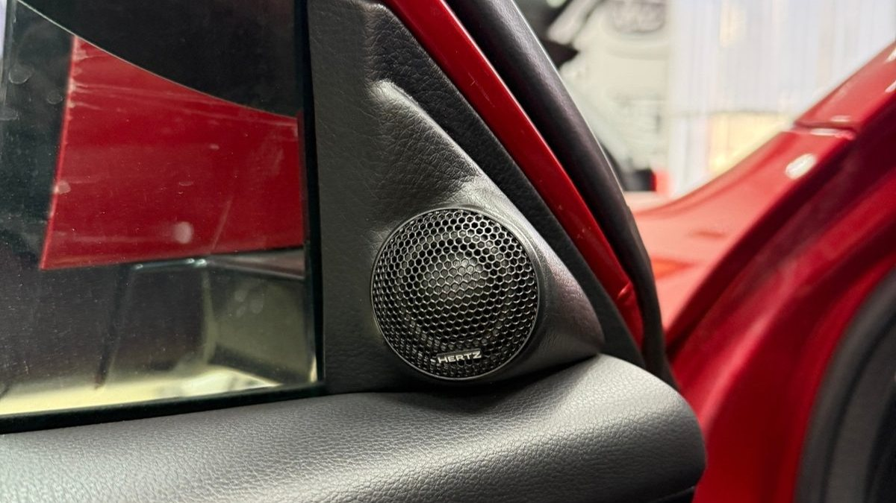
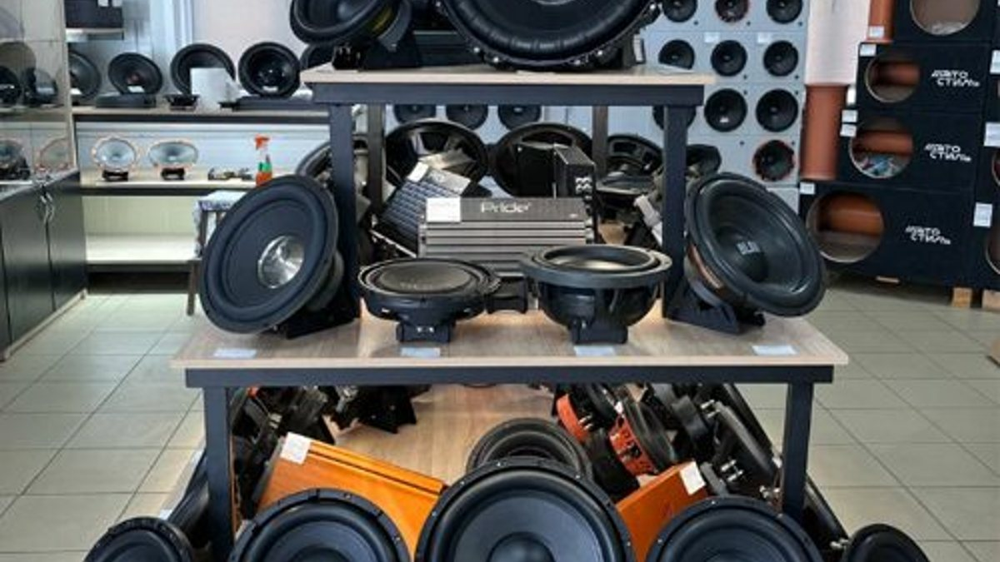

Вечер, вы стоите на набережной, Волга уже тёмная, город светится огнями на том берегу. Включаете любимый трек, делаете погромче – и на середине громкости двери начинают дребезжать, бас превращается в бубнёж, а голос певца звучит откуда-то из-под коленки. В голове простой план: купить динамики помощнее, может быть, сабвуфер. Открываете маркетплейс, а там тысячи коробок с одинаковыми обещаниями.
Автозвук в Ярославле, как и везде, чаще всего проваливается не из-за плохого железа, а из-за неверного порядка. Человек меняет динамики, не готовит двери, ставит сабвуфер раньше фронта или берёт усилитель, который нечем кормить. Расскажем, из чего складывается звук в машине, в каком порядке собирать систему, как выбрать студию и что спросить до покупки.

Штатная акустика рассчитана на то, чтобы играть разборчиво и стоить недорого. Дверные динамики в большинстве машин с бумажными диффузорами и лёгкими магнитами, пищалки нередко стоят в ногах или вовсе отсутствуют. Встроенный усилитель штатной магнитолы маломощный, и на громкости он начинает искажать сигнал.
Но главный враг звука – сама дверь. Динамик в двери работает как в корпусе колонки, а корпус этот из тонкого металла с дырами. Задняя волна диффузора уходит в эти дыры, встречается с передней и гасит бас. Металл двери резонирует и дребезжит, пластик обивки стучит. Поэтому новый дорогой динамик в неподготовленной двери часто звучит почти так же, как старый.
И последнее – геометрия. Водитель сидит не по центру: левый динамик к нему ближе правого. Звук от ближнего приходит раньше, и сцена разваливается, певец «уезжает» влево и вниз. Это лечится не динамиками, а настройкой.
Хороший автозвук – это цепочка, и звучит она по самому слабому звену.
- Источник. Магнитола или штатное головное устройство. Важно, какой сигнал оно отдаёт и можно ли к нему подключить усилитель или процессор без потерь.
- Процессор (DSP). Отдельный блок или встроенный в усилитель. Делит частоты между динамиками, выравнивает громкость, задерживает сигнал от ближних динамиков, чтобы звук от всех пришёл к ушам водителя одновременно. Именно процессор собирает сцену перед лобовым стеклом.
- Усилитель. Даёт динамикам мощность с запасом, чтобы на громкости они играли чисто.
- Фронтальная акустика. Компонентная система: мидбас в двери, пищалка выше, в зеркальном треугольнике или на стойке. Коаксиальные динамики, где пищалка стоит в центре мидбаса, проще, но сцену строят хуже.
- Сабвуфер. Закрытый ящик, фазоинвертор или компактный активный сабвуфер под сиденье. Закрытый ящик играет собранно и точно, фазоинвертор громче на низах, но больше по объёму, активный подкладной экономит место, но глубокого баса от него ждать не стоит.
- Провода и питание. Силовой провод к усилителю, предохранитель у аккумулятора, надёжная масса. Экономия здесь даёт помехи, просадки и в худшем случае оплавленный провод.
- «Хочу, чтобы было чисто и разборчиво». Музыка на средней громкости, подкасты, голос. Обычно хватает подготовки передних дверей, хорошей компонентной акустики и небольшого процессора или усилителя с процессором. Сабвуфер компактный или вовсе позже.
- «Хочу, чтобы качало». Важна громкость и плотный низ. Тут без усилителя и полноценного сабвуфера не обойтись, а фронт нужно подтянуть, иначе на громкости он потеряется на фоне баса. Отдельно считают питание: возможно, понадобится толще провод и проверка аккумулятора и генератора.
- «Хочу как на концерте». Это путь к Hi-End: процессор с тонкой настройкой, качественный фронт, иногда трёхполосный, аккуратная работа со стойками и дверями. Здесь особенно важен мастер-настройщик, а не только железо.
Определитесь, какой из трёх запросов ваш, и с этим идите в студию. Так разговор сразу пойдёт о деле.
Самый разумный порядок – идти шагами, когда каждый следующий опирается на предыдущий, а не выбрасывает его.
1. Подготовка дверей и фронт. Вибропоглотитель на металл двери, закрытые технологические отверстия, антискрип на обивке, жёсткое кольцо под динамик. Ставится компонентная акустика. Даже на штатной магнитоле разница заметна.
2. Процессор и усилитель. Динамики получают мощность и правильную настройку. Именно на этом шаге появляется сцена.
3. Сабвуфер. Добавляет низ, который дверной динамик физически не воспроизведёт. Подбирается под багажник и музыку.
4. Настройка. Не разовая: после первых недель езды привычки слуха меняются, и настройку часто поправляют.
Частая ошибка – начать с сабвуфера. Бас появляется, но фронт как бубнил, так и бубнит, а громкий сабвуфер только подчёркивает, что спереди звука нет. Вторая ошибка – купить мощный усилитель и подключить его тонким проводом от прикуривателя. Третья – взять динамики, не померив посадочное место и глубину двери, и потом пилить проставки на коленке.

Студия автозвука в Ярославле – это не только монтажники, но и человек, который поможет собрать систему под ваш бюджет и вкус. Признаки нормальной студии:
- Сначала вопросы, потом прайс. Какую музыку слушаете, что не нравится сейчас, оставляете ли штатную магнитолу, нужен ли багажник целиком. Если вам сразу предлагают «комплект за столько-то» – это продажа, а не подбор.
- Можно послушать. Стенд с динамиками или машина с готовой системой. Разница между двумя динамиками за одинаковые деньги бывает огромной, и решать это лучше ушами.
- Говорят про двери. Если про подготовку дверей вам не сказали ни слова, звук будет хуже, чем мог бы.
- Предлагают план по шагам. Хорошая студия соберёт первый этап так, чтобы следующий не требовал всё переделывать.
- Аккуратный монтаж. Провода в гофре или оплётке, пайка или качественные клеммы, силовой провод с предохранителем у аккумулятора, обивки на месте без сломанных клипс.
- Поддержка после установки. Возможность приехать и поменять настройку, когда вы привыкнете к звуку.
Купить динамики можно где угодно, но магазин при студии даёт то, чего нет у маркетплейса: послушать, примерить к вашей машине и сразу понять, встанет ли динамик в дверь без переделок. Плюс гарантия производителя и тот, к кому можно вернуться с вопросом. Если же покупаете сами, сначала узнайте размеры посадочного места, глубину монтажа и как подключаться к вашей магнитоле, а потом выбирайте модель.
Соревнования по автозвуку проходят в двух основных направлениях. Одно про качество: судьи оценивают сцену, тональный баланс, разборчивость, как будто вы слушаете живой концерт. Второе про громкость: меряют звуковое давление, и машины там собраны совсем иначе, с мощным питанием и огромными сабвуферами.
Даже если вы не собираетесь выступать, сходить на соревнования стоит: там можно послушать много разных систем вживую, поговорить с владельцами и понять, какой звук нравится именно вам. Расписание местных этапов, в том числе если вы ищете кубок Ярославля по автозвуку, обычно публикуют организаторы в своих группах ВК.
Хватит ли просто поменять динамики? Немного лучше станет, но без подготовки дверей и нормальной мощности новые динамики раскроются едва наполовину. Если бюджет ограничен, лучше двери и хороший фронт, чем дорогие динамики в голой двери.
Нужно ли менять магнитолу ради звука? Не всегда. Со штатной магнитолой можно работать через процессор, который берёт сигнал и исправляет его. Это сохраняет штатный вид салона и функции.
Сабвуфер заберёт весь багажник? Не обязательно. Есть стелс-корпуса в нишу боковины, сабвуферы в нишу запаски и компактные активные под сиденье. Выбор зависит от того, сколько места вы готовы отдать и какого баса ждёте.
Не слетит ли гарантия у новой машины после установки акустики в машину? Работы выполняют так, чтобы не трогать штатную проводку без нужды. Перед установкой уточните у студии, есть ли сертификаты, и заберите документы на работы.
Сколько стоит установка автозвука? Цену честно называют после разговора и осмотра. Она зависит от числа этапов, выбранной акустики, нужен ли процессор и усилитель, сабвуфер, сколько работы с дверями и проводкой. Поэтому сначала план, потом сумма.
Студия «Звук на Волге», Ярославль, проспект Октября, 82б. Пн–пт 8:30–20:00, сб–вс 10:00–19:00. Делаем всё, от замены штатных динамиков до Hi-End и соревновательных систем: подскажем, с чего начать, согласуем бюджет, подберём оборудование, установим и настроим. Компоненты можно послушать на стенде в студии. Для нового автомобиля можно не переживать за дилерскую гарантию: у студии есть необходимые сертификаты. После установки приезжайте поменять настройки или задать вопрос.
Подробнее и запись: автозвук в Ярославле под ключ. Телефон +7 902 220-75-55, сообщения в ВК: vk.me/avtostil_yaroslavl.
Раньше вы могли знать нас как «Автостиль». Раз уж мы каждый день занимаемся звуком в Ярославле, студия обновилась и назвалась «Звук на Волге». Адрес не поменялся.